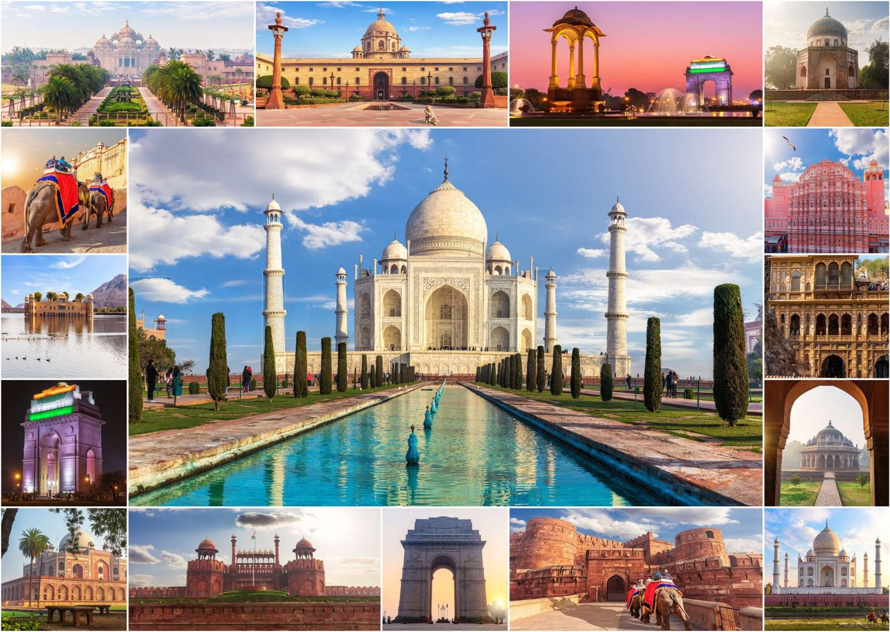
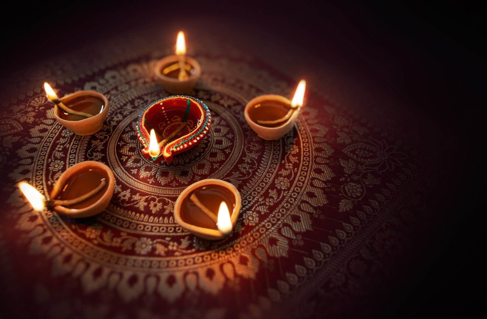
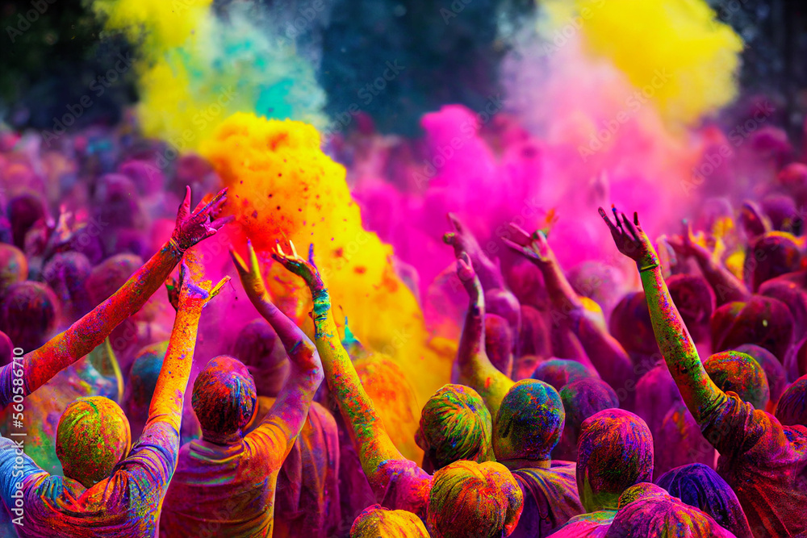
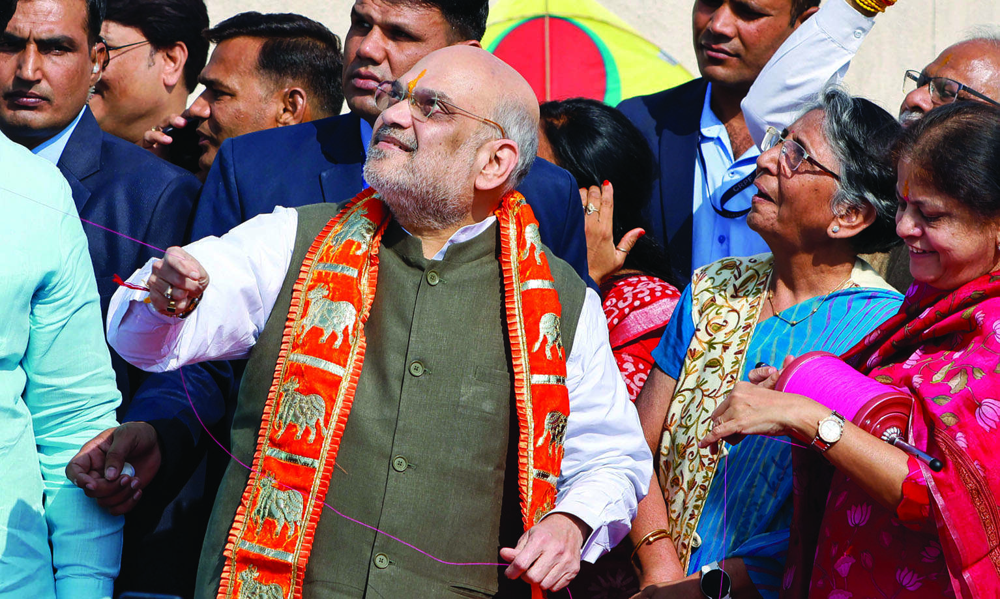

India is a land of ancient wisdom and living traditions, where history and culture thrive side by side. From the majestic Himalayas to serene backwaters and golden deserts, its landscapes are breathtakingly diverse. Each region reflects a unique identity shaped by languages, customs, and vibrant festivals. India is the birthplace of major religions and a center of spiritual discovery. Its art, architecture, and monuments tell stories of glorious civilizations. Traditional values blend seamlessly with modern progress and innovation. Indian cuisine offers a rich tapestry of flavors and aromas. Warm hospitality defines the spirit of its people. Incredible India is a journey that touches the soul.

Click to watch the videoDiwali, the Festival of Lights, is one of India's most cherished celebrations, symbolising the victory of light over darkness and good over evil. Marked by the glow of oil lamps, vibrant rangoli, fireworks, and the warmth of family gatherings, Diwali fills homes and hearts with joy and hope. Rooted in ancient traditions yet celebrated with modern spirit, the festival reflects India's rich cultural diversity, spiritual depth, and timeless message of renewal, prosperity, and togetherness—truly capturing the soul of Incredible India.

Click to watch the videoHoli, the vibrant festival of colors, celebrates the joy of life, the arrival of spring, and the triumph of good over evil. Observed across India with great enthusiasm, it brings people together as streets come alive with clouds of color, music, laughter, and festive delicacies. Rooted in ancient traditions and legends, Holi symbolizes renewal, harmony, and unity, breaking barriers of age, caste, and culture. More than a festival, it is an expression of India's spirit—warm, inclusive, and endlessly colorful.

Click here to see the videoUttarayan, also known as the Kite Festival, is a vibrant celebration that marks the sun's northward journey and the arrival of longer, brighter days in India. Observed mainly in Gujarat and other parts of the country, the festival fills the sky with colorful kites as families and friends gather on rooftops in joyful competition. Traditional music, festive sweets like tilgul and chikki, and the spirit of togetherness make Uttarayan a symbol of hope, prosperity, and the harmony between nature and culture—truly reflecting the timeless charm of Incredible India.